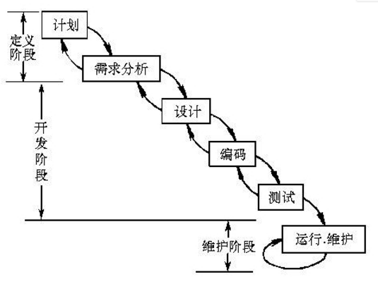
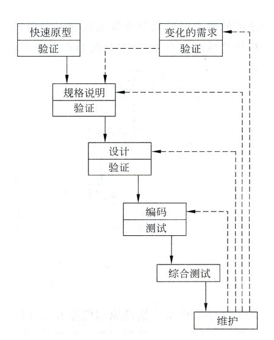
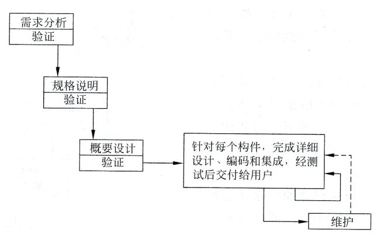
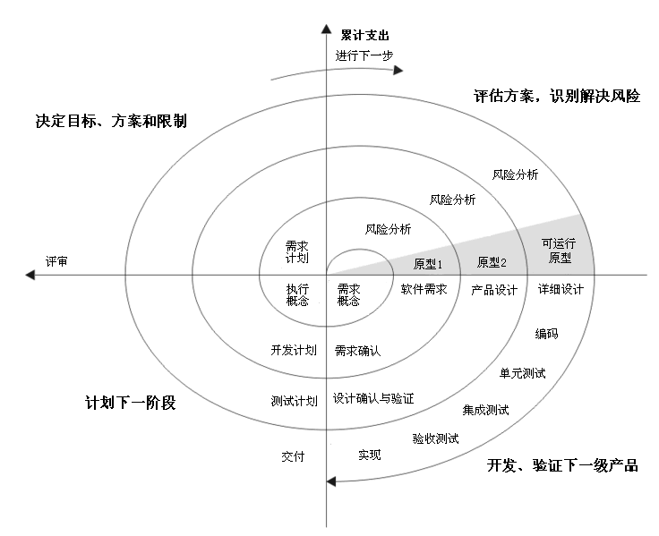
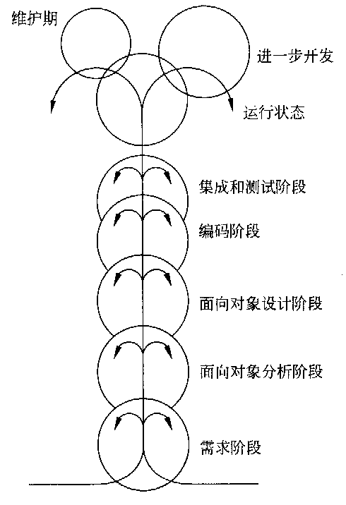
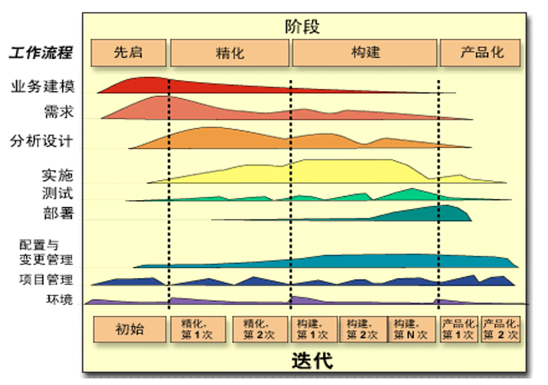

#软件危机
#介绍
在计算机软件的开发和维护过程中所遇到的一系列严重问题。软件危机包含下述两方面的问题：如何开发软件，以满足对软件日益增长的需求；如何维护数量不断膨胀的已有软件。
#产生原因
与软件本身特点有关：
- 缺乏“可见性”，管理和控制软件开发过程相当困难。
- 不可能测试出全部错误，软件维护意味着改正或修改原来的设计，使得软件较难维护。
- 规模庞大，在技术和管理上异常复杂和困难。
与软件开发与维护的方法不正确有关：
- 忽视软件需求分析的重要性。
- 轻视软件维护。
#消除的途径
- 对计算机软件正确认识：软件是程序、数据及相关文档的完整集合。
- 既要有技术措施(方法和工具)，又要有科学的组织管理措施
- 严密管理，良好组织，发扬团队精神
- 推广使用在实践中总结出来的开发软件的成功的技术和方法，并且研究探索更好更有效的技术和方法，尽快消除错误概念和做法
- 开发和使用更好的软件工具
#软件生命周期
软件生命周期由软件定义（包括问题定义、可行性研究和需求分析三个阶段）、软件开发（包括总体设计、详细设计、编码及单元测试和综合测试四个阶段，前两个阶段又称为系统设计，后两个阶段又称为系统实现）和运行（软件）维护 3 个时期组成。
#问题定义
“要解决的问题是什么” ——问题性质、工程目标、工程规模
#可行性研究
“上一个阶段所确定的问题是否有行得通的解决办法” ——技术、经济、操作、法律、社会效益等方面
#需求分析
“目标系统必须做什么” ——经用户确认的系统逻辑模型以及规格说明书
#总体设计
“概括地回答怎样实现目标系统?” ——实现目标系统的几种可能的方案；确定程序由哪些模块组成以及模块间的关系（体系结构）
#详细设计
“应该怎样具体地实现这个系统” ——详细设计每个模块；确定实现模块功能所需的算法和数据结构
#编码和单元测试
写出正确的、容易理解、容易维护的程序模块 单元测试：对编写出的每个程序模块进行测试
#综合测试
通过各种类型的测试(及相应的调试)使软件达到预定的要求。最基本的测试是集成测试和验收测试。必要时可以用现场测试或平行运行进一步测试检验。保留正式的文档把测试计划、详细测试方案及实际测试结果保存，作为软件配置的一部分。
#运行维护
- 改正性维护。诊断和改正在使用过程中发现的软件错误。
- 适应性维护。适应性修改软件以适应环境的变化。
- 完善性维护。根据用户的要求改进或扩充软件使它更完善。
- 预防性维护。修改软件为将来的维护活动预先做准备。
#软件过程
#瀑布模型(Waterfall Model)

传统的瀑布模型开发软件特点：
-
阶段间具有顺序性和依赖性
- 前一阶段完成后才能开始后一阶段的工作。
- 前一阶段输出作为后一阶段输入，只有前一阶段有正确输出时，后一阶段才有可能正确结果。（实际上不可避免地会犯错误，因此实际的瀑布模型是带反馈环的）
-
推迟实现的观点
- 可避免急于求成而导致的返工。
- 将系统分析与逻辑设计同物理实现清楚分开开来。
- 尽可能推迟程序的物理实现。
-
质量保证的观点（文档驱动的模型）
- 每个阶段都必须完成和提交规定的文档，否则则认为该阶段任务未完成。
- 每个阶段结束前都要对所完成的文档进行严格评审，以尽早发现问题，纠正错误。
优点：
- 提供了一种规范，使得分析、设计、编码、测试与维护工作可以在该规范的指导下有序地展开，避免了软件开发、维护过程中的随意状态。
- 对于需求确定、不随时间发生变化的项目，瀑布模型仍然是一种可以考虑采用的过程模型。
缺点：
- 完全依赖静态文档，不适应需求经常发生变更的环境。
- 瀑布倒流导致开发成本高。
- 只有到项目的开发晚期才能够得到程序的可运行版本，因疏忽而导致的错误要到检验运行时才能发现，造成经济、时间的损失。
- 出现“阻塞”状态，导致开发周期长。
#快速原型模型(Rapid Prototype Model)

特点：
- 不带”反馈环“，线性顺序开发。
- 快速原型的本质是“快速”，尽可能使用快速开发工具尽快地建造出原型系统，以加速软件开发过程，节约软件开发成本。
- 原型的用途是获知用户的真正需求，一旦需求确定了，原型将被完全或部分抛弃。
优点：
- 减少由于需求的不明确而带来的开发风险。
缺点：
- 不适用于大型复杂系统的开发。
- 缺乏规范化的文档，内部结构可能不够好。
#增量模型(Incremental Model)

特点：
- 任务或功能模块驱动，可以分阶段提交产品。
- 每个构件由多个相互作用的模块构成，并且能够完成特定的功能。
- 第一个增量构件往往实现软件的基本需求，提供最核心的功能。
- 然后以”滚雪球“的方式逐步扩充系统功能。
优点：
- 较短时间内提交可以部分工作的产品，对用户起到镇静剂的作用。
- 减少全新产品带给客户的冲击。
- 重要功能被首先交付使用，可以得到更多测试。
- 由于将一个大系统分解为多个小系统，这就等于将一个大风险分解为多个小风险，从而降低了开发难度和开发风险。
- 人员分配灵活，在项目开始不用投入大量的人力资源。
缺点：
- 集成新的增量构件时，必须保证不破坏原有系统。（需要开放式架构）
#螺旋模型(Spiral Model)

使用原型和风险分析相结合来尽量降低风险，可以理解为在每个阶段之前都增加了风险分析过程的快速原型模型。
优点：
- 对可选方案和约束条件的强调有利于已有软件的重用。
- 支持用户需求的动态变化。
- 有助于已有软件的重用。
- 有助于把软件质量作为软件开发的重要目标。
- 减少了过多/过少测试带来的风险。
- 维护作为开发的一个周期，与开发没有本质区别。
- 风险驱动型：风险过大时能及时终止项目。
缺点：
- 风险驱动：需要专业的风险评估人员。
- 过多的迭代次数会增加项目成本，延迟提交时间。
- 很难让用户确信这种演化方法的结果是可以控制的。由于建设周期长，而软件技术发展比较快，所以经常出现软件开发完毕后，和当前的技术水平有了较大的差距，无法满足当前用户需求。
#喷泉模型(Fountain Model)

- 以用户需求为动力，以对象为驱动的模型，是典型的面向对象生命周期模型。
- 体现了面向对象软件开发过程迭代和无缝的特性
- 圆圈重叠：活动之间存在交迭。
- OO 方法在概念和表示方法上的一致性保证了各项开发活动间的无缝过渡。
- 向下箭头：阶段内的迭代（求精）。
- 各项活动无明显边界，可同步进行。（为避免活动开发过分无序，应把“线性过程” （快速原型模型或如图中的中轴线）作为总目标）
优点：
- 各个阶段没有明显的界限，开发人员可以同步进行开发，提高了软件项目开发效率，节省了开发时间。
缺点：
- 各个开发阶段是重叠的，因此在开发过程中需要大量的开发人员，因此不利于项目的管理。
- 要求严格管理文档，使得审核的难度加大，尤其是可能随时加入各种信息。
#RUP (Rational Unified Process)

(1) 9 个核心工作流，前 6 个为核心过程工作流程，后 3 个为核心支持工作流程。
(2) 把软件生命周期划分为四个连续的阶段：初始阶段、精化阶段、构建阶段和移交阶段。
(3) 强调采用迭代和渐增的方式来开发软件。
(4) 采用 UML 语言描述软件开发过程。
(5) 有功能强大的软件工具 Rational Rose 支撑。
优点：
- 在开发早期或中期，用户需求可以变化。
- 在迭代之初，它不要求有一个相近的产品原型。
- 模型的适用范围很广，几乎适用于所有的项目开发。
缺点：
- 要求项目组成员具有很高的水平并掌握先进的开发工具。
#敏捷过程与极限编程（Agile Software Process & XP）
敏捷宣言：
- 个体和互动高于流程和工具
- 工作的软件高于面面俱到的文档
- 客户合作高于合同谈判
- 响应变化高于遵循计划
敏捷开发的特点：
- 渐增式。短周期、小版本渐进交付。
- 协作。业务人员和开发人员长期紧密地在一起工作和交流。
- 简单易懂。方法本身易学、易修改和易存档。
- 适配性。即使在最后时刻也能够处理需求变化。
XP 的优点：
- 由于采用简单策略，不需要长期计划和复杂管理，因而开发周期短。
- 由于采用迭代增量开发、反馈修正和反复测试的方法，因而软件质量有保证。
- 由于适应用户需求的变化，因而与用户关系和蔼。
（1）重视客户的参与；（2）重视团队合作和沟通；（3）制定计划前做出合理预测；（4）让编程人员参与软件功能的管理；（5）重视质量；（6）简单设计；（7）高频率的重新设计和重构；（8）高频率及全面的测试；（9）递增开发；（10）连续的过程评估；（11）对过去的工作持续不断的检查。
XP的缺点：
（1）以代码为中心，忽略了设计；（2）缺乏设计文档，局限于小规模项目；（3）对已完成工作的检查步骤缺乏清晰的结构；（4）质量保证依赖于测试；（5）缺乏质量规划；（6）没有提供数据的收集和使用的指导；（7）开发过程不详细；（8）全新的管理手法带来的认同度问题；（9）缺乏过渡时的必要支持。
#微软过程（MSF）
MSF = RUP + Agile
微软过程软件生命周期：规划阶段、设计阶段、开发阶段、完成开发工作、准备好可发布版本。
| 序号 | 模 型 名 称 | 优 点 | 缺 点 | 适 用 范 围 |
|---|---|---|---|---|
| 1 | 瀑布模型 | 简单好学 | 逆转性差 | 面向过程开发 |
| 2 | 增量模型 | 可以分阶段提交 | 有时用户不同意 | 系统可拆卸和组装 |
| 3 | 迭代模型 | 需求可变 | 风险大 | 有高素质软件团队 |
| 4 | 原型模型 | 开发速度快 | 不利于创新 | 已有产品的原型 |
| 5 | 螺旋模型 | 需求可变 | 建设周期长 | 庞大、复杂、高风险项目 |
| 6 | 喷泉模型 | 提高开发效率 | 不利于项目的管理 | 面向对象开发 |
| 7 | XP模型 | 提高开发效率 | 不适合大团队、大项目 | 小团队，小项目 |